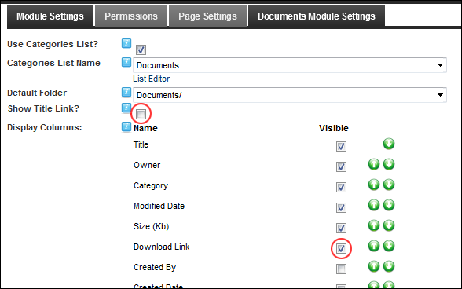

How to enable or disable the document title to function as a download link to the associated document for the Documents module. This setting is enabled by default.
Important. Documents cannot be downloaded if the 'Show Title Link' field is disabled and the 'Download Link' is not Visible. In this scenario, the document titles and visible columns are displayed as static text to all users who can view the module.

Title Link disabled and the alternative Download Link enabled